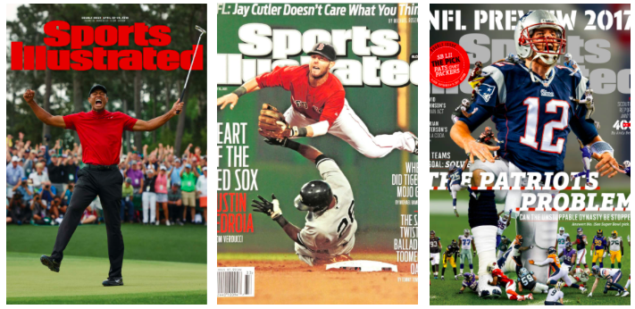
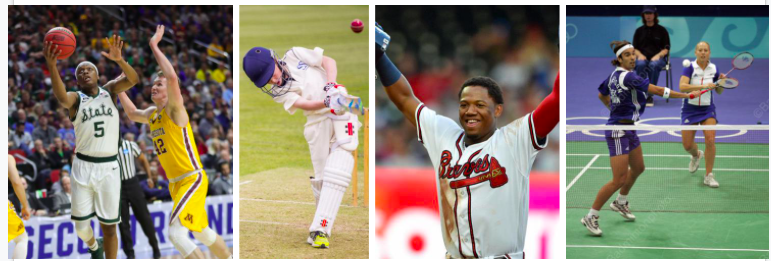
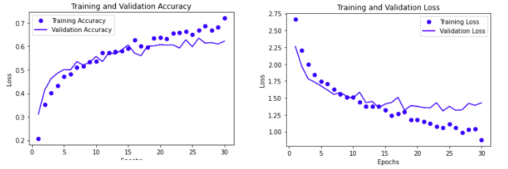
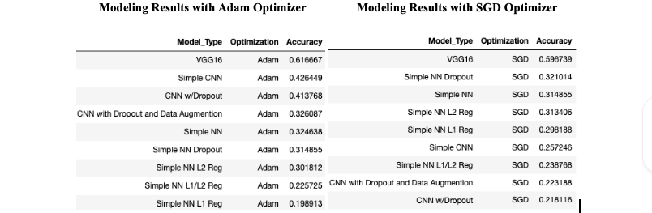
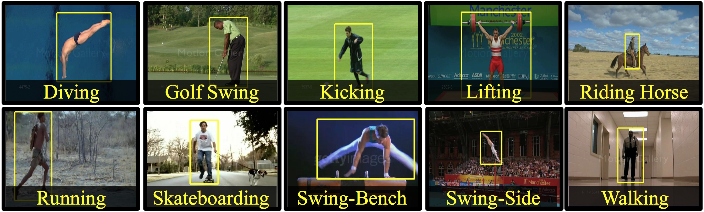

Overview
Image recognition is a powerful tool that can be used in a variety of use cases throughout any domain. Image recognition is quickly becoming one of the most popular projects for machine learning to automate previously manual tasks performed by a human. In order for an image recognition model to be successful, it must be able to accurately label and categorize images based on the dataset it was trained on. For my second project this semester, I will be taking the Sports Illustrated covers for the past ten years (2010-2019) and running them through a model I created to identify what sport is on the cover of the magazine.
The global image recognition market size is expected to reach USD 109.4 billion by 2027, according to a new report by Grand View Research, Inc. The market is anticipated to expand at a CAGR[Compound Annual Growth Rate] of 18.8% from 2020 to 2027, (Grand View Research, 2020).
Using an image recognition model, the data entry or data governance teams at Sports Illustrated would be able to run these covers through the image recognition model and classify each cover to the sport they belong to. This model, if calibrated correctly, could also perform this classification activity with their entire image library. Instead of having an employee manually go through all of the magazine cover archives and label each magazine cover. The model would be able to do this in a matter of minutes and save valuable company resources.
 Sample Sports Illustrated Covers I attempted to classify.Hypothesis
My hypothesis is that I can create a model that will accurately label each Sports Illustrated cover based on the sports portrayed on the main image. Classifying images is no easy task for a machine. The machine cannot differentiate one image from another until it is trained on the differences between the images. I believe with the sports image dataset I am using (more on that below in the data section), I can create an accurate model that will correctly classify each sports image. It would be extremely time consuming to have a person manually go through each Sports Illustrated cover and label what sport is represented with the main cover image. Having this historical data would allow Sports Illustrated to perform various analysis including:
- What sports sell the most issues?
- Are there any trends for sports based on the season/time of the year?
- What sort of representation is there on the covers?
- Is Sports Illustrated over representing or under representing any societal, cultural, or sport groups?
- If a group is underrepresented, how can we become more inclusive while also increasing sales?
The Data
 Sample images from the datatset I will be using to train my model.For this project, I will be using a sports image dataset from Kaggle that was created in December 2020. The training dataset contains over 11,000 images of 22 different sports and their labels. This dataset will be excellent for building my initial model because it contains images from a variety of sports. One major issue arose with the dataset once I began my exploratory data analysis. The dataset is robust and contains almost every major sport. However, the dataset did not contain any images for american football. This sport may not be popular world wide, however, for my project, it is necessary to include. The overwhelming majority of Sports Illustrated covers contain images from american football. Therefore, I had to create a python function that scraped over 300 images from Google image search that included american football. These images had to be appended to the original dataset I downloaded from Kaggle.
Link to the dataset: https://www.kaggle.com/c/logical-rythm-2k20-sports-image-classification/data
Once my data is collected, cleaned, and formatted correctly for my model, I then scraped images from the Sports Illustrated website for the magazine covers from 2010-2019. I had to manually label each cover for modeling purposes.
Link to where images are hosted that will be scraped: https://vault.si.com/vault/archives/2010s/2019
Method
For the exploratory data analysis portion of the project, I did not have to perform a lot of cleaning or manipulating on the dataset. There are only two columns in the labels dataset (image name and sport) and the images are all provided in the same size/format. As mentioned above, the only major change I made to the dataset was the addition of the images for american football. Otherwise, the images were in the correct format and did not need to be modified for modeling. I had to change the labels from a string to a numerical representation (categorical). However, that was not too difficult.
Once the data was collected, inspected, and perfected, I ran my data through 9 different image recognition algorithms. I chose to run my data through various iterations of a Neural Network (NN) and Convoluted Neural Network (CNN) to see what the differences were and what tuning did to each algorithm’s accuracy. I also ran the data through two sets of optimizers for each model; SGD and Adam. I did not have a lot of experience with NNs and CNNs and wanted to see how each optimizer affected the modeling
The 9 models I chose to run my data through include:
- Neural Network
- -Simple Neural Network
- -Neural Network with L2 Regularization Penalty
- -Neural Network with L1 Regularization Penalty
- -Neural Network with Simultaneous L1 and L2 Regularization Penalty
- -Neural Network with Dropout Penalty
- Convolutional Neural Network
- -Simple Convolutional Neural Network
- -Convolutional Neural Network with Dropout Penalty
- -Convolutional Neural Network with Data Augmentation and Dropout Penalty
- Convolutional Neural Network using a Pre-Trained Covnet
- -Pre-Trained Covnet VGG-16
As this is a single-label, multiclass classification problem, I will be using the loss (the ROC curve) and accuracy of the model to validate its ability to correctly classify the images. For my modeling, I split my data into a test and train sets. This allowed me to tune my model and test it against independent data to get an accurate idea of how the models are working.
 Accuracy and ROC curve for Adam VGG-16 modeling resultsResults
For my modeling, I first ran each optimizer through a 5 epoch cycle of various learning rates to determine the best learning rate for each optimizer. Then I ran each model through both optimizers (SGD and Adam) at the best performing learning rate. I ran each model through a training session and determined the best epoch for running the test data through the model. Too many epochs, and I would be overfitting the data. Too few epochs, and I would not have an accurate enough model. You can see the Python code for all of these models in my GitHub Repository. After my extensive modeling through all 9 models for each optimizer, below are the results for each model.
 Results from the 9 models for both SGD and Adam optimizersAs expected, the modeling leveraging the pre-trained VGG-16 covnet performed the best. I was excited to see an accuracy of 62% as when I started out with the simple NN, I was getting accuracy levels in the teens and low 20s. I felt confident that my model was sufficiently tuned and ready to run the Sports Illustrated covers through. Once I transformed the Sports Illustrated covers to an array appropriate for modeling, I ran the data through the VGG-16 Pretrained Covnet with Adam as an optimizer. The model came back lower than I expected with an accuracy rate of 28% and a loss of about 3. The low loss number was reassuring. However, for this model to be used in a real world setting, I would like to see the accuracy much higher than 28%.
VGG16 is a convolution neural net (CNN ) architecture which was used to win ILSVR (Imagenet) competition in 2014. It is considered to be one of the excellent vision model architectures till date (Thakur, 2020)
Conclusion
In future iterations of this project, I would like to increase the accuracy of the model. This could be done in a variety of different ways in the modeling process. I could also look at isolating the main image and removing any additional details on the cover image that cause unwanted noise for my model. An accuracy of 28% is not as high as I would have hoped for in the beginning of this project. However, I can say that my hypothesis was correct. I was able to create a model that can accurately classify a sports image based on the details and context of the picture. Image recognition will only continue to grow with the increasing power of cell phone cameras as well as the continued adoption of smart cameras like Nest and Ring.
The advent of digital cameras, particularly cameras built into smartphones, has led to an exponential growth in the volume of digital content in the form of images and videos. A vast amount of visual and digital data is being captured and shared through several applications, websites, social networks, and other digital channels. Several businesses have leveraged this online content to deliver better and smarter services to their customers, with the use of digital image processing. For instance, in October 2019, SnapPay Inc., a U.S. based payment platform provider, launched facial recognition payment technology in the North America region. By using this technology in its payment solution, the company has aimed at allowing its customers a new level of convenience for payments at retail outlets (Grand View Research, 2020).
With the fast paced growth of image collecting technology, the amount of image data that can be collected will increase exponentially. The images collected will only continue to be clearer and image recognition will be a powerful tool used in various places like grocery stores, airports, sports areas. You name it, there is most likely a camera present capturing our every move. Having all of this data to simplify and improve our lives will be a major incentive for companies in the future.
Citations
Bennett, A. J. (2020, May 2). List of Top 10 Best Sports Magazines of All Time. Retrieved April 16, 2021, from https://posora.com/best-sports-magazines/
Grand View Research. (2020, March). Image Recognition Market Size Worth $109.4 Billion By 2027. Retrieved April 16, 2021, from https://www.grandviewresearch.com/press-release/global-image-recognition-market
mediumnok. (2021, April 19). ADAM in 2019 — What’s the next ADAM optimizer - Towards Data Science. Medium. https://towardsdatascience.com/adam-in-2019-whats-the-next-adam-optimizer-e9b4a924b34f#:%7E:text=Adam%20is%20great%2C%20it’s%20much,2019%20were%20still%20using%20SGD
Thakur, R. (2020, November 24). Step by step VGG16 implementation in Keras for beginners. Medium. https://towardsdatascience.com/step-by-step-vgg16-implementation-in-keras-for-beginners-a833c686ae6c